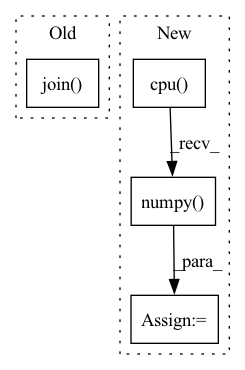

Pattern ID :15938
Before Change
output_file, tabular2graph):
node_embeddings_file = node_embeddings_dir + "/" + node_embeddings_name + ".pt"
mapped_node_embeddings_file = node_embeddings_dir + "/" + node_embeddings_name + "_mapped.pt"
nmap_file = os.path.join( partition_dir, "nmap.pt")
with open(tabular2graph, "r") as file:
config = yaml.safe_load(file)
After Change
""{}" is not an existing file".format(node_embeddings_file)
)
node_emb = torch.load(node_embeddings_file)
node_emb_arr = node_emb.cpu() .detach().numpy()
node_emb_dict = {i: val for i, val in enumerate(node_emb_arr)}
for i, node in enumerate(col_map.keys()):
emb = pd.DataFrame(df[col_map[node]].map(node_emb_dict).tolist()).add_prefix(In pattern: SUPERPATTERN
Frequency: 4
Non-data size: 4
Instances Fragment ID: 53698179
Project Name: oap-project/cloudtik
Commit Name: d3bb0c12099085345b5c51e00a195cb273de8a30
Time: 2023-06-09
Author: haifeng.chen@intel.com
File Name: python/cloudtik/runtime/ai/modeling/graph_modeling/graph_sage/modeling/map_embeddings.py
M Class Name: AnonimousClass
N Class Name: AnonimousClass
M Method Name: map_embeddings(5)
N Method Name: map_embeddings(6)
M Parent Class:
N Parent Class:
M File Name: python/cloudtik/runtime/ai/modeling/graph_modeling/graph_sage/modeling/map_embeddings.py
N File Name: python/cloudtik/runtime/ai/modeling/graph_modeling/graph_sage/modeling/map_embeddings.py
M Start Line: 17
M End Line: 96
N Start Line: 112
N End Line: 165
Before Change
img_fastmarch_output = sitk.GetImageFromArray(fastmarch_output)
img_fastmarch_output.SetSpacing(spacing_raw)
sitk.WriteImage(
img_fastmarch_output, os.path.join( image_folder, "image3d_dis1.nii.gz")
)
img_geodistkraster_output = sitk.GetImageFromArray(geodistkraster_output)
img_geodistkraster_output.SetSpacing(spacing_raw)After Change
seed_image_pt = seed_image_pt.to(device)
tic = time.time()
toivanenraster_output = np.squeeze(
FastGeodis.generalised_geodesic3d_toivanen(
input_image_pt, seed_image_pt, spacing, 1e10, 1.0, 4
)
.detach()
.cpu()
.numpy()
)
toivanenraster_time = time.time() - tic
tic = time.time() Fragment ID: 53698178
Project Name: masadcv/fastgeodis
Commit Name: a1906e989649c1f0b8fdbed147c1d576ac5c41f3
Time: 2022-07-22
Author: muhammad.asad@kcl.ac.uk
File Name: samples/demo3d.py
M Class Name: AnonimousClass
N Class Name: AnonimousClass
M Method Name: demo_geodesic_distance3d(2)
N Method Name: demo_geodesic_distance3d(2)
M Parent Class:
N Parent Class:
M File Name: samples/demo3d.py
N File Name: samples/demo3d.py
M Start Line: 33
M End Line: 204
N Start Line: 17
N End Line: 181
Before Change
PAD_TOKEN_ID = tokenizer.convert_tokens_to_ids(["[PAD]"])[0]
while PAD_TOKEN_ID in prediction: // 移除label中的 [PAD] token
prediction.remove(PAD_TOKEN_ID)
label_tokens.append("".join( tokenizer.convert_ids_to_tokens(prediction)) )
used = time.time() - start_time
print(f"Used {used}s.")After Change
input_ids=tokenized_output["input_ids"].to(device),
token_type_ids=tokenized_output["token_type_ids"].to(device)).logits
predictions = convert_logits_to_ids(logits, tokenized_output["mask_positions"]).cpu().numpy() .tolist() // (batch, label_num)
predictions = verbalizer.batch_find_main_label(predictions) // 找到子label属于的主label
predictions = [ele["label"] for ele in predictions]
used = time.time() - start_time
print(f"Used {used}s.")
return predictions Fragment ID: 53698175
Project Name: harderthenharder/transformers_tasks
Commit Name: bf825bb22c43795f1e3a08cf8969ddc613051e76
Time: 2022-11-30
Author: pankeyu@pankeyus-MacBook-Pro.local
File Name: prompt_tasks/p-tuning/inference.py
M Class Name: AnonimousClass
N Class Name: AnonimousClass
M Method Name: inference(1)
N Method Name: inference(1)
M Parent Class:
N Parent Class:
M File Name: prompt_tasks/p-tuning/inference.py
N File Name: prompt_tasks/p-tuning/inference.py
M Start Line: 50
M End Line: 69
N Start Line: 59
N End Line: 80
Before Change
total_files = len(file_names)
for index in range(total_files):
lr_image_path = os.path.join( config.lr_dir, file_names[index])
sr_image_path = os.path.join(config.sr_dir, file_names[index])
hr_image_path = os.path.join(config.hr_dir, file_names[index])
print(f"Processing `{os.path.abspath(hr_image_path)}`...")After Change
// Cal PSNR
total_psnr += 10. * torch.log10(1. / torch.mean((sr_y_tensor - hr_y_tensor) ** 2))
sr_y_image = sr_y_tensor.mul_(255.0).cpu() .squeeze_(0).squeeze_(0).numpy()
sr_image = np.array([sr_y_image, bic_ycbcr[..., 1], bic_ycbcr[..., 2]]).transpose([1, 2, 0])
sr_image = np.clip(imgproc.convert_ycbcr_to_rgb(sr_image), 0.0, 255.0).astype(np.uint8)
sr_image = Image.fromarray(sr_image)
sr_image.save(sr_image_path) Fragment ID: 53698173
Project Name: lornatang/fsrcnn-pytorch
Commit Name: 5a0ecdd432cc264e98e446689348e5565a84ac1f
Time: 2021-11-19
Author: liuchangyu1111@gmail.com
File Name: validate.py
M Class Name: AnonimousClass
N Class Name: AnonimousClass
M Method Name: main(0)
N Method Name: main(0)
M Parent Class:
N Parent Class:
M File Name: validate.py
N File Name: validate.py
M Start Line: 53
M End Line: 95
N Start Line: 63
N End Line: 98